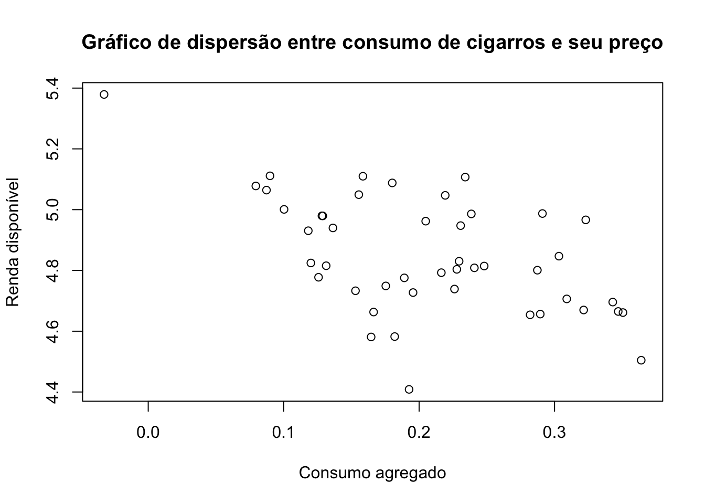
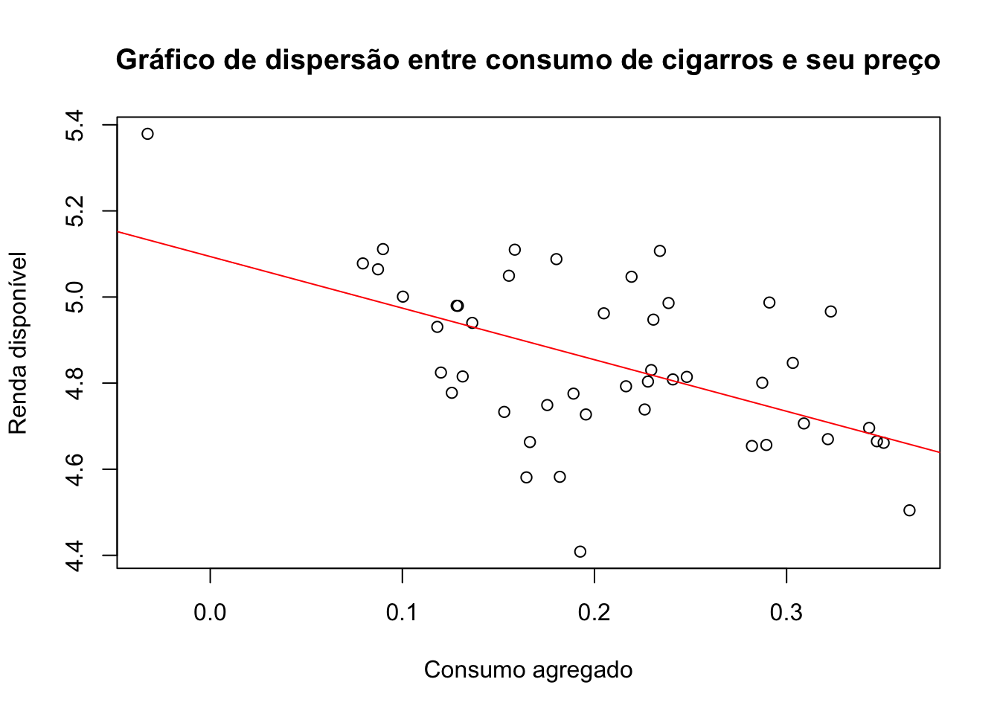
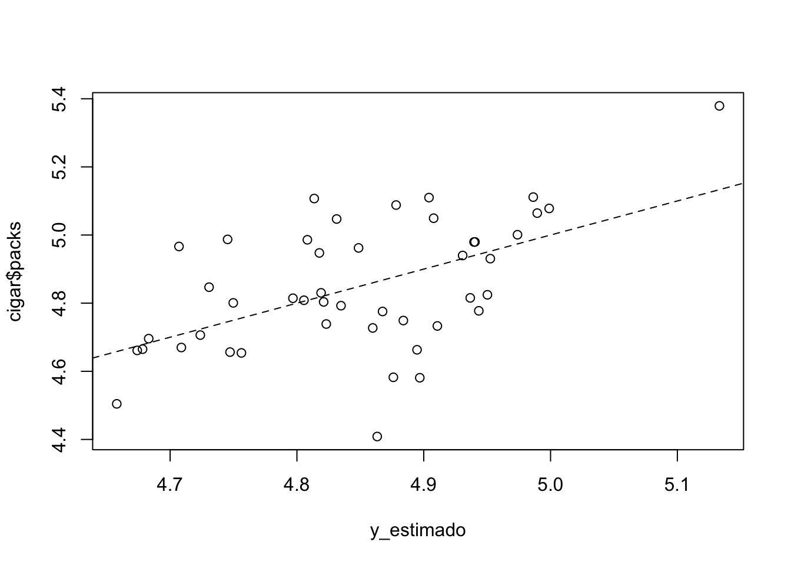
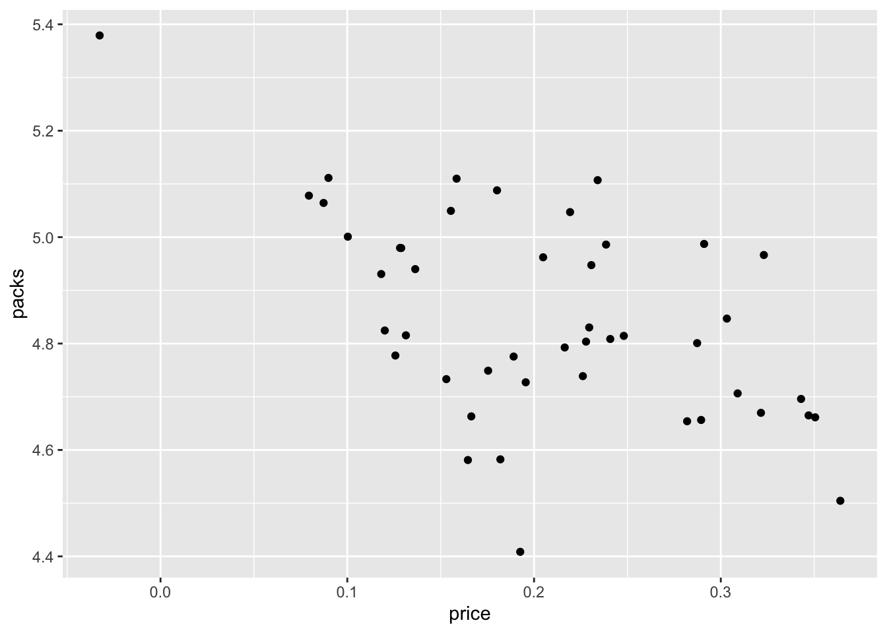

library(stargazer)
Please cite as: Hlavac, Marek (2022). stargazer: Well-Formatted Regression and Summary Statistics Tables. R package version 5.2.3. https://CRAN.R-project.org/package=stargazer library(kableExtra)
library(magrittr)Vinicius Oike
March 21, 2019
Please cite as: Hlavac, Marek (2022). stargazer: Well-Formatted Regression and Summary Statistics Tables. R package version 5.2.3. https://CRAN.R-project.org/package=stargazer Em econometria queremos explicar uma variável \(y\) em função de um conjunto de regressores, ou variáveis explicativas, \(x_{1}, x_{2}, \dots, x_{k}\). Isto é, criamos um modelo matemático que explica \(y\) em função destes regressores, \(y = f(x_{1}, x_{2}, \dots, x_{k})\). A forma mais simples para \(f(\dot)\) é a linear, isto é,
\[\begin{equation} y_{t} = \beta_{0} + \beta_{1}x_{1,t} + \beta_{2}x_{2,t} + \dots + \beta_{k}x_{k,t} + u_{t} \end{equation}\]onde queremos estimar os valores de \(\beta_{0}, \beta_{1}, \dots, \beta_{k}\). O último termo da equação, \(u_{t}\), é geralmente denominado “ruído” ou “erro”. Os parâmetros \(\beta_{0}, \beta_{1}, \dots, \beta_{k}\) nos informam os “efeitos marginais” que a variável \(x_{i}\) respectiva tem sobre a variável de interesse \(y\). Em alguns casos, pode-se inclusive afirmar que o valor estimado de \(\beta_{i}\) é o efeito causal que \(x_{i}\) tem sobre \(y\).
Digamos que o consumo de cigarros seja linearmente relacionado ao preço do maço. A base CigarettesB traz informações do preço do maço de cigarros e do consumo (per capita) de cigarros para 46 estados dos EUA no ano de 1992. Para carregar esta precisamos primeiro do pactoe AER.
Para carregar pacotes no R use a função library(), caso ainda não tenha instalado o pacote use install.packages("AER") e depois carregue o pacote. Para carregar a base de dados usamos a função data() com o nome da base de dados como argumento, isto é, data("CigarettesB").
| packs | price | income | |
|---|---|---|---|
| AL | 4.96213 | 0.20487 | 4.64039 |
| AZ | 4.66312 | 0.16640 | 4.68389 |
| AR | 5.10709 | 0.23406 | 4.59435 |
| CA | 4.50449 | 0.36399 | 4.88147 |
| CT | 4.66983 | 0.32149 | 5.09472 |
| DE | 5.04705 | 0.21929 | 4.87087 |
| DC | 4.65637 | 0.28946 | 5.05960 |
| FL | 4.80081 | 0.28733 | 4.81155 |
| GA | 4.97974 | 0.12826 | 4.73299 |
| ID | 4.74902 | 0.17541 | 4.64307 |
Temos 46 observações de cada uma das três variáveis. Indexando cada uma delas pela letra \(i = 1, 2, \dots, 46\) queremos estimar o seguinte modelo:
\[ \text{Packs}_{i} = \beta_{0} + \beta_{1}\text{Price}_{i} + u_{t} \]
Isto é, queremos estimar \(\beta_{0}\) e \(\beta_{1}\) acima. Adicionalmente, como se trata de um modelo de regressão simples (i.e., com apenas uma variável explicativa) queremos também visualizar a relação linear graficamente. Vamos começar com um gráfico de dispersão. Para montar o gráfico usamos a função plot(). Além disso, é conveniente trabalhar com um nome mais simples do que “CigarettesB”. Recomenda-se, em geral, que se crie objetos com nomes curtos e com letras minúsculas. Neste caso, uma opção intuitiva seria “cigar”.
# "Renomeia" a tabela CigarettesB
cigar <- CigarettesB
# Gráfico de dispersão
plot(
packs ~ price,
data = cigar,
main = "Gráfico de dispersão entre consumo de cigarros e seu preço",
xlab = "Consumo agregado",
ylab = "Renda disponível"
)
Para estimar o modelo usamos a função lm(). Esta função devolve um objeto do tipo “lm”, que é, essencialmente, uma lista de valores. Usando o operador “$” podemos acessar os diferentes valores guardados dentro do objeto “lm” criado. Usando a função a summary em torno do “lm” retorna uma saída com informações gerais sobre a regressão.
# Regressão linear
fit <- lm(packs ~ price, data = cigar)
# Exibe os principais resultados da regressão
summary(fit)
Call:
lm(formula = packs ~ price, data = cigar)
Residuals:
Min 1Q Median 3Q Max
-0.45472 -0.09968 0.00612 0.11553 0.29346
Coefficients:
Estimate Std. Error t value Pr(>|t|)
(Intercept) 5.0941 0.0627 81.247 < 2e-16 ***
price -1.1983 0.2818 -4.253 0.000108 ***
---
Signif. codes: 0 '***' 0.001 '**' 0.01 '*' 0.05 '.' 0.1 ' ' 1
Residual standard error: 0.163 on 44 degrees of freedom
Multiple R-squared: 0.2913, Adjusted R-squared: 0.2752
F-statistic: 18.08 on 1 and 44 DF, p-value: 0.0001085Como se vê parece haver uma relação linear significante entre o preço do pacote de cigarro e o seu consumo per-capita. Em particular, esta relação é negativa, como seria esperado. Para visualizar graficamente o ajuste do modelo usamos a função abline().
# Regressão linear
plot(
packs ~ price,
data = cigar,
main = "Gráfico de dispersão entre consumo de cigarros e seu preço",
xlab = "Consumo agregado",
ylab = "Renda disponível"
)
abline(fit$coefficients, col = 'red')
Podemos facilmente visualizar o resíduo desta regressão. A função residuals() ou resid() captura os resíduos do modelo. Assim, o código abaixo salva o resíduo da estimação acima num objeto chamada residuo.
Existem outras funções que facilitam a extração de elementos específicos da estimação da regressão. O código abaixo mostra alguns exemplos.
# Extrai os valores ajustados
y_estimado <- fitted(fit)
# Plota no gráfico contra os valores observados
plot(y_estimado, cigar$packs)
abline(a = 0, b = 1, lty = 2)
# Regressão linear
fit_mult <- lm(packs ~ price + income, data = cigar)
# Exibe os principais resultados da regressão
summary(fit_mult)
Call:
lm(formula = packs ~ price + income, data = cigar)
Residuals:
Min 1Q Median 3Q Max
-0.41867 -0.10683 0.00757 0.11738 0.32868
Coefficients:
Estimate Std. Error t value Pr(>|t|)
(Intercept) 4.2997 0.9089 4.730 2.43e-05 ***
price -1.3383 0.3246 -4.123 0.000168 ***
income 0.1724 0.1968 0.876 0.385818
---
Signif. codes: 0 '***' 0.001 '**' 0.01 '*' 0.05 '.' 0.1 ' ' 1
Residual standard error: 0.1634 on 43 degrees of freedom
Multiple R-squared: 0.3037, Adjusted R-squared: 0.2713
F-statistic: 9.378 on 2 and 43 DF, p-value: 0.0004168Wald test
Model 1: packs ~ price
Model 2: packs ~ price + income
Res.Df Df F Pr(>F)
1 44
2 43 1 0.7676 0.3858
t test of coefficients:
Estimate Std. Error t value Pr(>|t|)
(Intercept) 4.29966 0.90893 4.7305 2.434e-05 ***
price -1.33833 0.32460 -4.1230 0.0001676 ***
income 0.17239 0.19675 0.8761 0.3858180
---
Signif. codes: 0 '***' 0.001 '**' 0.01 '*' 0.05 '.' 0.1 ' ' 1| wage | hours | IQ | KWW | educ | exper | tenure | age | married | black | south | urban | sibs | brthord | meduc | feduc | lwage |
|---|---|---|---|---|---|---|---|---|---|---|---|---|---|---|---|---|
| 769 | 40 | 93 | 35 | 12 | 11 | 2 | 31 | 1 | 0 | 0 | 1 | 1 | 2 | 8 | 8 | 6.645091 |
| 808 | 50 | 119 | 41 | 18 | 11 | 16 | 37 | 1 | 0 | 0 | 1 | 1 | NA | 14 | 14 | 6.694562 |
| 825 | 40 | 108 | 46 | 14 | 11 | 9 | 33 | 1 | 0 | 0 | 1 | 1 | 2 | 14 | 14 | 6.715383 |
| 650 | 40 | 96 | 32 | 12 | 13 | 7 | 32 | 1 | 0 | 0 | 1 | 4 | 3 | 12 | 12 | 6.476973 |
| 562 | 40 | 74 | 27 | 11 | 14 | 5 | 34 | 1 | 0 | 0 | 1 | 10 | 6 | 6 | 11 | 6.331502 |
| 1400 | 40 | 116 | 43 | 16 | 14 | 2 | 35 | 1 | 1 | 0 | 1 | 1 | 2 | 8 | NA | 7.244227 |
A restrição de linearidade do modelo é somente sobre os parâmetros, isto é, sobre os betas. Pode-se incorporar não-linearidades de outras forma. O modelo abaixo, por exemplo, continua sendo um modelo de regressão linear:
\[ y_{t} = \beta_{0} + \beta_{1}x_{1t}^{3} + \beta_{2}\frac{1}{x_{2t}} + \beta_{3}\text{log}(x_{3t}) + \epsilon_{t} \]
library("wooldridge")
data("hprice2")
fit <- lm(
log(price) ~ log(nox) + log(dist) + rooms + I(rooms^2) + stratio,
data = hprice2)
summary(fit)
Call:
lm(formula = log(price) ~ log(nox) + log(dist) + rooms + I(rooms^2) +
stratio, data = hprice2)
Residuals:
Min 1Q Median 3Q Max
-1.04285 -0.12774 0.02038 0.12650 1.25272
Coefficients:
Estimate Std. Error t value Pr(>|t|)
(Intercept) 13.385477 0.566473 23.630 < 2e-16 ***
log(nox) -0.901682 0.114687 -7.862 2.34e-14 ***
log(dist) -0.086781 0.043281 -2.005 0.04549 *
rooms -0.545113 0.165454 -3.295 0.00106 **
I(rooms^2) 0.062261 0.012805 4.862 1.56e-06 ***
stratio -0.047590 0.005854 -8.129 3.42e-15 ***
---
Signif. codes: 0 '***' 0.001 '**' 0.01 '*' 0.05 '.' 0.1 ' ' 1
Residual standard error: 0.2592 on 500 degrees of freedom
Multiple R-squared: 0.6028, Adjusted R-squared: 0.5988
F-statistic: 151.8 on 5 and 500 DF, p-value: < 2.2e-16\[ \frac{\partial log(y_{t})}{\partial log(x_{1t})} \]
data("lawsch85")
d <- lawsch85
d$top10 <- ifelse(test = d$rank <= 10, yes = 1, no = 0)
d$r11_25 <- ifelse(test = d$rank > 10 & d$rank <= 25, yes = 1, no = 0)
d$r26_40 <- ifelse(test = d$rank > 25 & d$rank <= 40, yes = 1, no = 0)
d$r41_60 <- ifelse(test = d$rank > 40 & d$rank <= 60, yes = 1, no = 0)
d$r61_100 <- ifelse(test = d$rank > 60 & d$rank <= 100, yes = 1, no = 0)
fit <- lm(
log(salary) ~ top10 + r11_25 + r26_40 + r41_60 + r61_100 + LSAT +
GPA + log(llibvol) + lcost,
data = d)
fit
Call:
lm(formula = log(salary) ~ top10 + r11_25 + r26_40 + r41_60 +
r61_100 + LSAT + GPA + log(llibvol) + lcost, data = d)
Coefficients:
(Intercept) top10 r11_25 r26_40 r41_60
9.0089365 0.7005341 0.5937752 0.3747281 0.2623565
r61_100 LSAT GPA log(llibvol) lcost
0.1312513 0.0056522 0.0147991 0.2110607 0.0007824 | wage | hours | IQ | KWW | educ | exper | tenure | age | married | black | south | urban | sibs | brthord | meduc | feduc | lwage |
|---|---|---|---|---|---|---|---|---|---|---|---|---|---|---|---|---|
| 769 | 40 | 93 | 35 | 12 | 11 | 2 | 31 | 1 | 0 | 0 | 1 | 1 | 2 | 8 | 8 | 6.645091 |
| 808 | 50 | 119 | 41 | 18 | 11 | 16 | 37 | 1 | 0 | 0 | 1 | 1 | NA | 14 | 14 | 6.694562 |
| 825 | 40 | 108 | 46 | 14 | 11 | 9 | 33 | 1 | 0 | 0 | 1 | 1 | 2 | 14 | 14 | 6.715383 |
| 650 | 40 | 96 | 32 | 12 | 13 | 7 | 32 | 1 | 0 | 0 | 1 | 4 | 3 | 12 | 12 | 6.476973 |
| 562 | 40 | 74 | 27 | 11 | 14 | 5 | 34 | 1 | 0 | 0 | 1 | 10 | 6 | 6 | 11 | 6.331502 |
| 1400 | 40 | 116 | 43 | 16 | 14 | 2 | 35 | 1 | 1 | 0 | 1 | 1 | 2 | 8 | NA | 7.244227 |
O pacote stargazer facilita muito a publicação dos resultados de uma regressão. Depois de carregar o pacote simplesmente use a função stargazer() num objeto lm. Lembre-se que para verificar a classe de um objeto usamos a função class().
Note que abaixo chamo a função usando o argumento type = 'html', pois estou usando o RMarkdown para fazer este site. Outras opções incluem type = 'text', que retorna uma tabela simples estilo .txt, e type = 'latex', que retorna uma tabela no formato LaTeX.
# Carregar pacote adicional de temas
stargazer(fit,
type = "html",
title = "Resultados da regressão",
covariate.labels = c("Preço", "Renda individual", "constante"),
dep.var.labels = "Pacotes de cigarro"
)| Dependent variable: | |
| Pacotes de cigarro | |
| Preço | 0.701*** |
| (0.053) | |
| Renda individual | 0.594*** |
| (0.039) | |
| constante | 0.375*** |
| (0.034) | |
| r41_60 | 0.262*** |
| (0.028) | |
| r61_100 | 0.131*** |
| (0.021) | |
| LSAT | 0.006* |
| (0.003) | |
| GPA | 0.015 |
| (0.074) | |
| log(llibvol) | 0.211 |
| (0.152) | |
| lcost | 0.001 |
| (0.025) | |
| Constant | 9.009*** |
| (0.445) | |
| Observations | 136 |
| R2 | 0.911 |
| Adjusted R2 | 0.905 |
| Residual Std. Error | 0.086 (df = 126) |
| F Statistic | 143.176*** (df = 9; 126) |
| Note: | p<0.1; p<0.05; p<0.01 |
O pacote ggplot2 oferece formas alternativas de visualizar a mesma relação linear que encontramos acima. Em particular, a função qplot() tem uma sintaxe muito similar à da função plot().
# Carrega o pacote
library(ggplot2)
# Função qplot
p <- qplot(x = price, y = packs, data = cigar, geom = "point")Warning: `qplot()` was deprecated in ggplot2 3.4.0.
Para adicionar uma linha de regressão acrescentamos geom_smooth. Especificamos que queremos um modelo linear adicionando o argumento ‘lm’